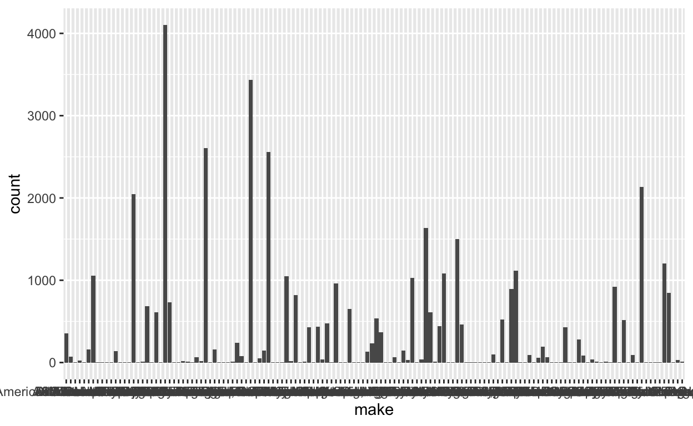
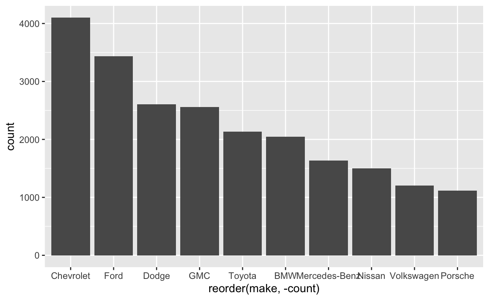
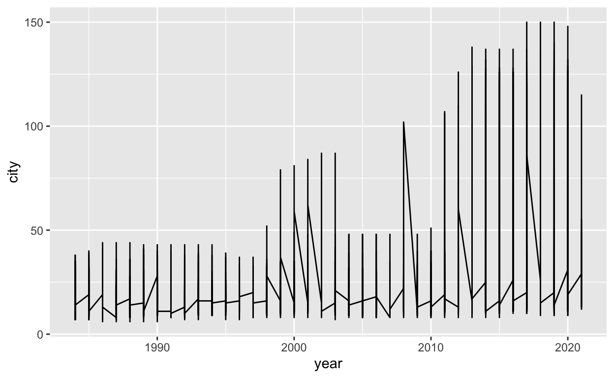
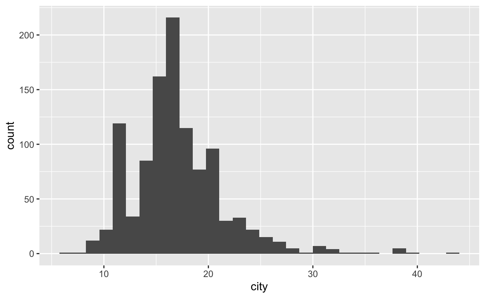
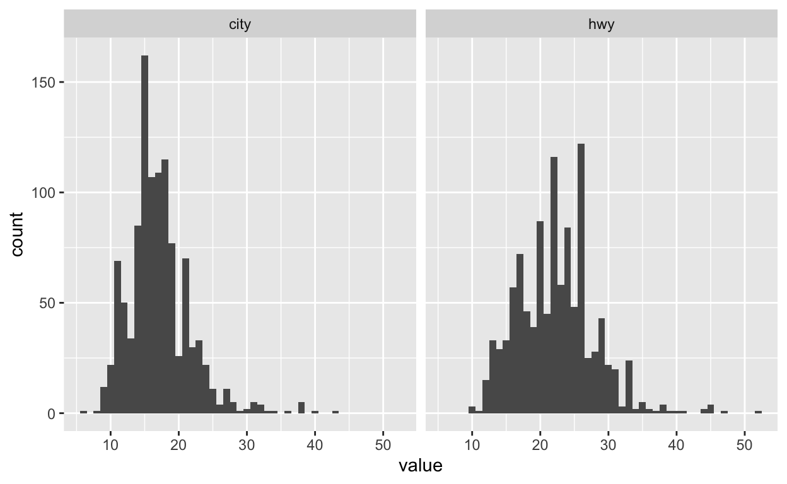

Best Practices for Graphical Summaries of Data
Depending on how we create graphical depictions of data, we can alter the viewer’s impression of the data; in other words, if a picture is worth a thousand words, then how we make the picture can change the story. Ideally, we want our graphical summaries to be as objective as possible; we want the data to speak for themselves. There are no hard and fast rules for creating graphical summaries. Still, there are some basic principles to follow1.
- Always have a title for your graphical summary. Titles should accurately describe the variables and the relationship shown in the summary. If one of the axes is time or the data are for a specific period, that should be in the title.
- Clearly label the axes and include units.
- When comparing two data sets, the axes for each summary should match.
Other principles and rules of thumb apply to specific types of plots that we will address as we work through these workshop exercises.
Lecture Examples
Let’s examine choices that we can make with the examples from Week 1.
First we are going to load the R package “MXB017”2.
library(MXB107)and load the epa_data dataset.
data("epa_data")Creating the Pareto Plot
To create the Pareto plot3.
The MXB107 package includes both the tidyverse package for manipulating data and the ggplot2 package, a very powerful package for producing very nice (aesthetically pleasing) plots. The syntax can be confusing, but for now, think of the ggplot2 commands as adding layers to a picture.
The simplest way to make a barplot is to just use geom_bar():
ggplot(epa_data,aes(make))+
geom_bar(stat = "count")
But this is ugly, first of all there are:
length(unique(epa_data$make))
#> [1] 138One hundred thirty-eight different makes represented in the data set; this makes the \(x\)-axis unreadable.
- What are some other problems with this chart?
- What if any information can you gather from this chart?
- What should you do to improve this chart and make it more informative?
Note that it probably makes more sense to look at only the major manufacturers. The first step is to create a data structure we will call make_data4 which will contain the top ten most common makes of cars in epa_data.
make_data<-epa_data%>%group_by(make)%>%
summarise(count = n())%>%
top_n(10)
#> Selecting by countNow let’s see what the bar plot looks like
ggplot(make_data,aes(x = reorder(make,-count)))+
geom_bar(aes(y = count),stat = "identity")
Now, modify the code below, adding appropriate labels for the axes, and a title to the plot
Hint: The commands xlab(), ylab(), and ggtitle() can be used to label the axes and add a title. And the command theme() can be used to adjust the text size.
library(MXB107)
data(epa_data)
make_data<-epa_data%>%group_by(make)%>%
summarise(count = n())%>%
top_n(10)
ggplot(make_data,aes(x = reorder(make,-count)))+
geom_bar(aes(y = count),stat = "identity")
library(MXB107)
data(epa_data)
make_data<-epa_data%>%group_by(make)%>%
summarise(count = n())%>%
top_n(10)
ggplot(make_data,aes(x = reorder(make,-count)))+
geom_bar(aes(y = count),stat = "identity")+
xlab("Manufacturer")+
ylab("Frequency")+
ggtitle("Manufacturers by Count")+
theme(text = element_text(size = 10))Creating the Line Plot
To create a line plot showing how EPA ratings for fuel economy while driving on the highway have changed we could simply use ggplot() to create a generic plot for epa_data with year for the \(x\)-axis and city for the \(y\)-axis. Then add a line with geom_line().
ggplot(epa_data,aes(x = year, y = city))+
geom_line() But these results are confusing and difficult to understand,
- What are some other problems with this chart?
- What if any information can you gather from this chart?
- What should you do to improve this chart and make it more informative?
Modify the code below using the ggplot function stat_summary to plot the average value of city for each year and add appropriate title, and labels for the axes5.
Hint: You might use stat_summary() to create the line of yearly averages and use commands xlab(), ylab(), and ggtitle() to label the axes and add a title. And the command theme() can be used to adjust the text size.
library(MXB107)
data(epa_data)
ggplot(epa_data,aes(x = year, y = city))
library(MXB107)
data(epa_data)
ggplot(epa_data,aes(x = year, y = city))+
stat_summary(geom = "line", fun = "mean")+
xlab("Year")+
ylab("EPA City Fuel Economy (MPG)")+
ggtitle("Yearly Average EPA City Fuel Economy (MPG) 1984-2021")
theme(plot.title = element_text(hjust = 0.5))Histograms
The line plot shows the trends over time in the average EPA City fuel economy ratings. Still, if we want to look more closely at a specific year to see the distribution or density of EPA City fuel economy ratings, we need to use a histogram.
ggplot(epa_data[epa_data$year==1990,],aes(city))+
geom_histogram()
Let’s compare the histogram of city to hwy. To do this, we will need to pivot our table, so we have one variable that indicates whether the mileage is “city” or “highway”.
## Create a new table with just the stuff we need.
df<-filter(epa_data,year==1990)%>%
select(city,hwy)%>%
pivot_longer(cols=c(city,hwy),names_to = "mileage")
ggplot(df,aes(x=value))+
geom_histogram(binwidth = 1)+facet_wrap(~mileage) Is this a fair comparison? What principles of good graphical summaries does this violate?
Identify what needs to be done to ensure that this plot conforms with the best principles for graphical summaries and make the changes.
Adjust the bin width for the two charts and see how this changes your interpretation of the data.
Hint: Modify your code to plot the density rather than counts, this makes it more easy to compare city versus highway mileage.
library(MXB107)
data(epa_data)
df<-filter(epa_data,year==1990)%>%
select(city,hwy)%>%
pivot_longer(cols=c(city,hwy),names_to = "mileage")
ggplot(df,aes(x=value))+
geom_histogram(binwidth = 1)+facet_wrap(~mileage)
library(MXB107)
data(epa_data)
df<-filter(epa_data,year==1990)%>%
select(city,hwy)%>%
pivot_longer(cols=c(city,hwy),names_to = "mileage")
ggplot(df,aes(x=value))+
geom_histogram(aes(y=..density..),binwidth = 2)+
facet_wrap(~mileage)Concluding Remarks
Graphical summaries may seem trivial and simplistic, but as you can see, it is easy to produce confusing or misleading graphical summaries; by adhering to the principles of good graphical summaries, you can avoid many problems.
Worksheet Practical Questions
Question 1
If you wanted to compare the fuel economy for manual versus automatic transmissions, what would you need to do, and which graphical summary would you use? Use ggplot to produce this graphical summary.
Hint: Like the example with city versus highway we would need to create a new data frame.
# Answer here!
library(MXB107)
data(epa_data)
df<-filter(epa_data,year==1985)%>%
pivot_longer(cols=c(city,hwy),names_to = "mileage")
ggplot(df,aes(x=value))+
geom_histogram(aes(y = ..density..),binwidth = 2)+
facet_wrap(~trans)Question 2
If you wanted to explore the how engine displacement changed over time, what type of graph or chart would you use and why? Use ggplot to produce this graphical summary.
Hint: As in the example, we need to use stat_summary() to create the plot.
# Answer here!
library(MXB107)
data(epa_data)
ggplot(epa_data,aes(x = year, y = disp))+
stat_summary(fun = "mean", geom="line")+
xlab("Year")+
ylab("Average Engine Displacement (l)")+
ggtitle("Yearly Average Engine Displacement (l)")+
theme(plot.title=element_text(hjust=0.5))Question 3
Is the Pareto plot in the example useful? What information does it give you? How could it be modified to identify which manufacturers made the most fuel-efficient cars? Use ggplot to produce this graphical summary.
Hint: As in the previous example we will meed to do some data manipulation using group_by(), summarise(), and slice_max().
# Answer here!
library(MXB107)
data(epa_data)
make_data<-epa_data%>%group_by(make)%>%
summarise(mean_mpg = mean(city))%>%
slice_max(order_by = mean_mpg,n = 10)
ggplot(make_data,aes(x = reorder(make,-mean_mpg)))+
geom_bar(aes(y = mean_mpg),stat = "identity")+
xlab("Manufacturer")+
ylab("Frequency")+
ggtitle("Manufacturers by Count")There are more specific “rules” that might occur to you or you might read elsewhere, but in general, these principles are intended to encourage good practice in making clear, accurate, and objective representations of the data.↩︎
Remember to make sure that you have the MXB107 package installed.↩︎
Named for Vilfredo Pareto https://en.wikipedia.org/wiki/Vilfredo_Pareto↩︎
Note that the command shown uses “pipes”. The %>% symbol tells R to take the output of one command and input it into the next command, starting with the first command on the left and moving to the right.↩︎
Try plotting the maximum value of city for each year. What changes?↩︎